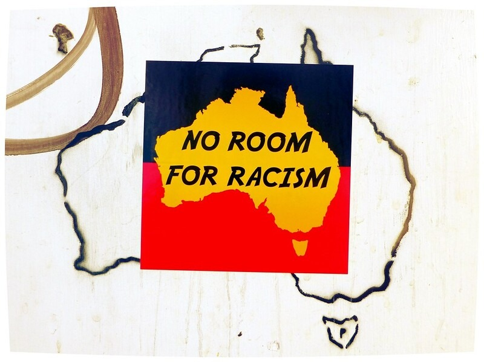

Original Blackboard item · _7400124_1
The ongoing violence of colonisation is perpetuated through racism, both on an individual and institutional level, which is experienced by Aboriginal and Torres Strait Islander Peoples every day. There are many different types of racism, both overt and covert. Examples of institutional racism occur in most mainstream health and social services where the western system of appointment times and service delivery demonstrates a lack of respect for Aboriginal and Torres Strait Islander Peoples alternative ways of thinking and understanding (Ranzij, McConnochie & Nolan, 2009).
We identify and discuss institutional racism as a major barrier to improving health outcomes for Aboriginal and Torres Strait Islander Peoples.
Institutionalised racism: can be defined as
“societal systems and patterns that have the net effect of imposing oppressive or otherwise negative conditions on identifiable groups based on race or ethnicity “ (Durey et al., 2011, p. 19).
Within health care, this is evident in systems founded on Western biomedical models of care and managed predominantly by white, middle‑class Australians, which often fail to understand the language, social contexts, and lived realities of Aboriginal and Torres Strait Islander peoples. As a result, “cross‑cultural misunderstandings undermine the quality of care to Aboriginal patients” (Durey et al., 2011, p. 19).
This understanding aligns with MacPherson’s definition of institutional racism as “the collective failure of an organisation to provide an appropriate and professional service to people because of their colour, culture, or ethnic origin.” Such failure may be detected in organisational processes, attitudes, and behaviours that result in discrimination through “unwitting prejudice, ignorance, thoughtlessness and racist stereotyping,” ultimately disadvantaging minority ethnic peoples (MacPherson, cited in Bourke, Marie & Marrie, 2019, p. 612).

Organisational leadership is known to be vital for exposing the structures and processes of institutional racism.
Have you witnessed instances of institutional discrimination and/or racism against Indigenous Peoples in your current or past workplace?
How was this acknowledged and/or discussed or ignored by the organisation?
Bring your responses to this week's tutorial for discussion.
Complete the reading below via MyReadings:
Durey, A., Thompson, S. C., & Wood, M. (2012). Time to bring down the twin towers in poor Aboriginal hospital care: addressing institutional racism and misunderstandings in communication. Internal Medicine Journal, 42(1), 17–22. https://doi.org/10.1111/j.1445-5994.2011.02628.x
Consider the question below: This activity helps prepare you for Assessment 2.
What role do the historical and contemporary concerns explored in this module play in Aboriginal and Torres Islander Peoples ability to access and engage with healthcare and social support within today’s mainstream services approach?
Post your response to the discussion board.
Aboriginal and Torres Strait Islander Peoples have survived and flourished in Australia through cultural strength and resilience despite extreme levels of racism and discrimination.
"Our people have left us deep roots, which empowered us to endure the violence of oppression. They are the roots of survival, but not of constriction. They are the roots of which all growth is possible. They are the roots that protected our end from the beginning.”
— (Dodson, 1994, p. 11)
In all areas of contact between Indigenous Australian Peoples, mainstream government and non-government organisations, the deficit ‘Aboriginal problem’ lens or perspective has dominated. It is well known Aboriginal and Torres Strait Islander peoples are over represented in so many measures of health and well-being (for example: chronic disease, mental health and infectious disease). This is replicated in the social welfare and justice systems; Indigenous children are being removed from their families and communities and Indigenous peoples are being incarcerated at an ever-increasing rate. Without the benefit of Aboriginal and Torres Strait Islander peoples stories about their histories, non-Indigenous Australians remain ignorant of and unconsciously complicit in maintaining Australia's colonial history.